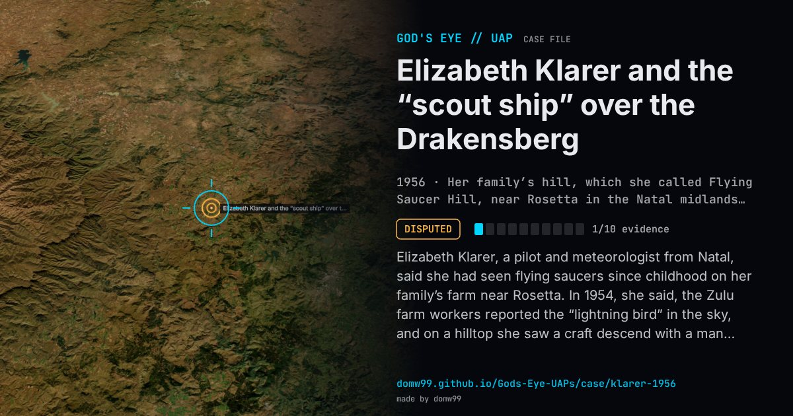

Elizabeth Klarer and the “scout ship” over the Drakensberg

Elizabeth Klarer, a pilot and meteorologist from Natal, said she had seen flying saucers since childhood on her family’s farm near Rosetta. In 1954, she said, the Zulu farm workers reported the “lightning bird” in the sky, and on a hilltop she saw a craft descend with a man visible at a porthole. On April 7, 1956, back on the hill, she said the man, Akon, took her aboard his scout ship to a mother ship. On July 17, 1956, after the farm was sold, she took seven photographs of a disc with a box camera. She went public in 1956, later said she had borne Akon’s son, and told the story in her book Beyond the Light Barrier. She is remembered as one of the first women to claim a relationship with an alien.
Explanation
There is no support beyond Klarer’s own account and her photographs, and the story grew over the years into a romance with a Venusian, a son fathered by him and a cover-up, in the mould of George Adamski’s contactee tales. Her family saw her leave the house alone on the day of the photographs; the obvious suspicion, a thrown hubcap, was rejected by the Pretoria ufologist Edgar Sievers, who said no hubcap matched the disc.
What was seen
Shape: A spinning silver disc about 60 feet across with a fixed central dome and portholes
Witnesses: Elizabeth Klarer alone; she said that other people saw a red glow on the hill that month
Duration: Her account: hours aboard a craft